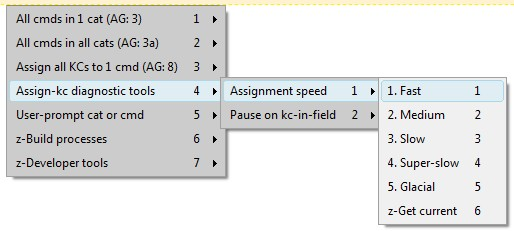
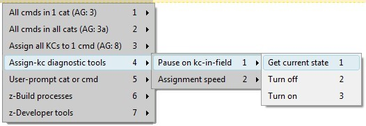
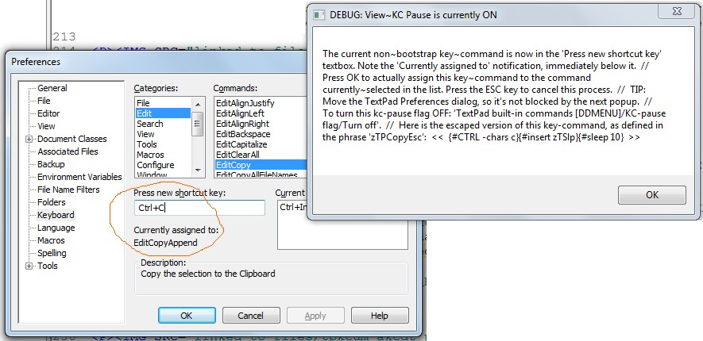
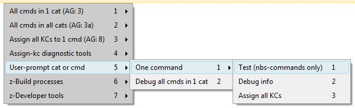
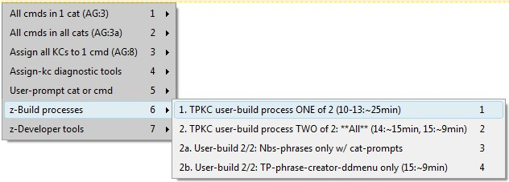
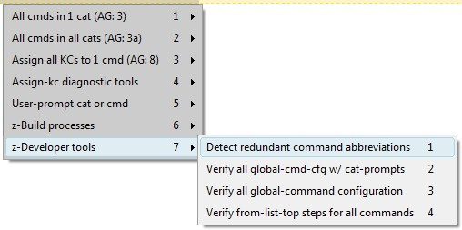

[BACK] TPKC user-menu: All-cmds-all-cats: Test ALL Non-BootStrap (nbs) commands[all, cat, ONE, all debugging tools]
Executes the TPKC-nbs-test for all commands in all categories. There are more than three hundred commands, and each one requires you to press ok, to confirm the test succeeded.
[BACK] TPKC user-menu: All-cmds-all-cats: Print ALL name/abrv/phrase-names[all, cat, all debugging tools]
Prints the command-name, abbreviation, and phrase-name for all commands in all categories. For a single command, see its listing in the assign all kcs to one command dropdown.
[BACK] TPKC user-menu: All-cmds-all-cats: List primary KC for ALL cmds[all, CAT, all debugging tools]
Prints the primary key-command for all commands in every category. Commands with no key-commands are suppressed.
[BACK] TPKC user-menu: All-cmds-all-cats: List all has-a-kc qb-listsPrints a sQuare-Bracketed List (qbl) for each category, containing the list of all commands that have at least one key-command assigned to them--either bootstrap or Non-BootStrap.
If a command is either a TextPad-bootstrap, or has at least one Non-BootStrap (nbs) kc, then it is included in this qbl. In other words, the has-a-kc qbl is an exact super-set of the nbs-phrases in its category.
This qbl is named
zzTpkcAllCmdsWAKcQbl_[category]
and is written at the bottom of each category's nbs-phrase file, as created by TPKC-build-proc-14:
{#insert zXPROOT_DIR_tpkc}\for_v_7_0_9\user_config\{#insert zvTPKC_UDIR_NM}\output\nbs_command_phrases__bldproc14\[category].px.txt
Every command in the "edit" category that is not in this (hypothetical) qbl, has no key-commands assigned to them.
zzTpkcAllCmdsWAKcQbl_edit
[EditBackspace][EditCapitalize][EditCopy][EditCopyAppend][EditCopyFileName][EditCopyTaggedLines][EditCut][EditCutAppend][EditCutTaggedLines][EditDelete][EditDelLine][EditDelLineEnd][EditDelTaggedLines][EditDelWordLeft][EditDelWordRight][EditDupLine][EditIndentLess][EditIndentMore][EditInvertCase][EditLowerCase][EditNewLineAfter][EditNewLineBefore][EditPaste][EditRedo][EditReformat][EditUndo][EditUpperCase]
This has-a-kc qbl is stored in
{#insert zXPROOT_DIR_tpkcUsrCfgUserBase_M_tudn}output\nbs_command_phrases__bldproc14\edit.px.txt
[BACK] TPKC user-menu: All-cmds-all-cats: Debug ALL cmds[all, cat (prompt), ONE, all debugging tools]
Prints all debugging information for all commands in every category.
[BACK] TPKC user-menu: All-cmds-all-cats: Assign all KCs to ALL cmds[all, cat, ONE (prompt), all debugging tools]
Assigns all key-commands to every command in every category.
[top] TPKC user-menu: Assign all kc-s to 1 cmd[all, cat, ONE (prompt), all debugging tools]
Assigns all key-commands, both bootstrap and Non-BootStrap (nbs) to a single key-command. Each command's name, abbreviation, and phrase-name are displayed in this list (and may also be printed in bulk, for one or all categories).
Warning: Before using this for the first time, is strongly recommended that you backup your current TextPad key-command setup.
This opens the
TextPad > Configure > Preferences
dialog, assigns all configured key-commands to the requested command, and closes the dialog. This process only works for commands that actually have a key-command assigned to them.
[top] TPKC: All debugging and diagnostic tools (including for the assign-kcs process)This section lists all available TPKC debugging and diagnostic tools, including those specific to the assign-all-kcs-to-a-command (all, cat, one) process.
Since the TPKC project (and therefore XBN-PhraseExpress as a whole) is so dependant on user-configured input, there are likely to be problems. The two most common problems:
There are numerous tools to assist you:
[GO] Primary key-commands[GO] Command-name, abbreviation, phrase-name[GO] All debugging information (user-prompt)[BACK] TPKC user-menu: Assign-kc-s diagnostic tools: Assignment speedUse these commands to slow down the assign-a-kc process (one, cat, all), for only when typing and then actually assigning each key-command. The speed of everything else is controlled by the overall XBNPE-key-press speed setting.

[BACK] TPKC user-menu: Assign-kc-s diagnostic tools: KC-pause flagTurning on the "KC-pause flag" causes the assign-a-kc process (one, cat, all) to pause and display some diagnostics. This gives you the opportunity to view the key-command that is about to be assigned, with the additional benefit of showing you the command it is currently assigned to.

For example (note that this happens to be a TextPad-bootstrap, hence "zTPCopyEsc"...if this were an Non-BootStrap [nbs] command, it would instead be something like "zTpkcEditCopyNbsKcEsc1"):

[top] TPKC user-menu: User-prompt cat or cmdSome specific processes that can be run for a single command or category, whose (lowercase) abbreviation you provide at a user-prompt.

(Click on an item for more information.)[BACK] TPKC user-menu: User-prompt: Debug all cmds in 1 cat[all, cat (prompt), ONE, all debugging tools]
Prints all debugging information for all commands in a single category, where the category-name abbreviation is provided by the user at a prompt.
[BACK] TPKC user-menu: User-prompt: Test a single nbs-command[all, cat, ONE, all debugging tools]
Prompts you for a command's abbreviation, and then executes its TPKC-nbs-test. This is only useful for commands that are Non-BootStraps, and for which a TPKC test has been setup.
A command's abbreviation may be obtained by looking at its entry in the assign all-kcs to 1 command drop-down.
Contents:
[GO] Non-BootStrap (nbs) command test format[GO] "Forcing" an nbs-test[GO] TextPad-bootstraps are not tested by the TPKC-projectWarning: Although the framework to support these TPKC nbs-tests is complete, very few tests have been setup. Most currently-existing tests are in the file category. If you have created a specific test, please consider contributing it (aliteralmind-github_AT_yahoo_DOT_com).
Each category has one or more files containing its test. Categories with many commands or numerous tests are split into multitple files. For example
{#insert zXPROOT_DIR_tpkc}\for_v_7_0_9\verify_nbs_commands\vnbsc_file_1of2.px.txt
These files contain the
zzNewFlV1Nbs_[category]_[commandname]_ifKc
and
zzzNewFlKcVrfy_[category]_[commandname]_M_cmd1this
phrases.
[BACK] TPKC user-menu: User-prompt: Debug info[all, cat (prompt), ONE, all debugging tools]
Prints all debugging information for a single command, where the command's abbreviation is provided by the user at a prompt. The abbreviation for each command is listed in the assign-all-kcs-to-a-command drop-down.
GoToBlockEnd category=cursor, abrv=crblke, phrase=zTPGoToBlockEnd, post-kc-slp-mills=10 bootstrap-kc=no nbs-kcs=0
EditCopy
category=edit, abrv=ecp, phrase=zTPCopy, post-kc-slp-mills=25
bootstrap-kc=yes
{#CTRL -chars j}{#insert zTSlp}{#sleep 10}
nbs-kcs=1
1: {#insert zCpINS}{#sleep 25}
Presenting these key-commands are only possible because they are internally stored in an escaped form (see tpbs, nbs).
[BACK] TPKC user-menu: User-prompt: Assign all KCs[all, cat, ONE (prompt), all debugging tools]
Assigns all key-commands to a single command, where its abbreviation is provided at the prompt. Command abbreviations are listed in the assign-kcs-to-one-cmd drop-down.
[top] TPKC user-menu: User build processes
[top] TPKC user-menu: Developer tools
[top] TPKC user-menu: PhraseExpress folder structure XBNPE: Parent folder >
XBN-PhraseExpress >
(go) XBNPE-TPKC: TextPad built-in commands >
All other TPKC phrases (8AG:1,2,3,3a,4,5,8,9) >
TextPad built-in commands [DDMENU]
All cmds in 1 cat (AG:3) -- FGH-TEST (file, config, help categories)
(info) All cmds in 1 cat (AG:3)
(info) All cmds in all cats (AG:3a)
Assign al KCs to 1 cmd (AG:8) -- FGH-TEST
(info) Assign al KCs to 1 cmd (AG:8)
(info) Assign-kc diagnostic tools
Assignment speed
Pause on kc-in-field
(info) User-promt cat or cmd
One command
(info) z-User-build processes
(info) z-Developer tools
Both "FGH-TEST" folder, and their "live" counterparts (which have no postfix), facilitate switching between TPKC-build versions. Exactly one version (either fgh or live) must be enabled and displayed in the pop-up menu at any one time. Which version should be enabled is determined by the TPKC master-config-variable
zzTpkcBuildVersionName